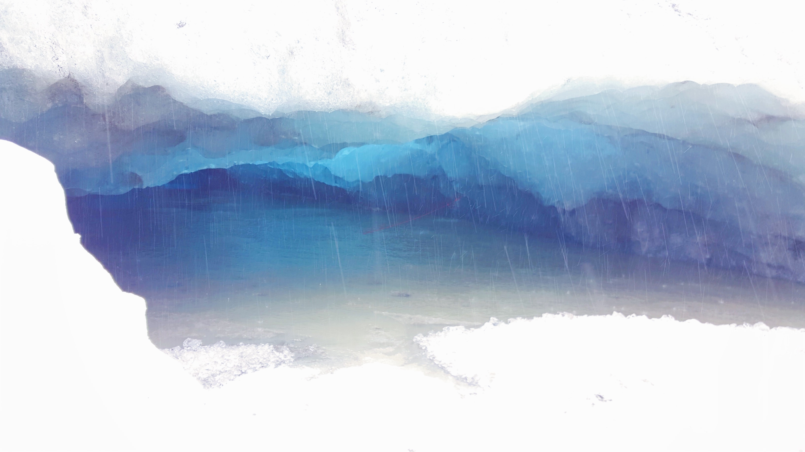

2016
2017
2018
2019
Iceland
Spring break 2017. One of the best yet most unfortunate trips ever.
I took this trip when WOW Airlines first came out with their $100 tickets from San Francisco to Reykjavik. It was
such a good deal that even my family (who hates traveling) decided to go. We spent 5 days there, which I felt was
the perfect amount of time to explore all the best places Reykjavik had to offer.
We started off our trip with a visit to The Blue Lagoon. You've probably seen countless photos of
this blue goethermal spa. The temperature of the water is warm (average 102 degrees F) all year round, heated by
the geothermal power plant nearby from which The Blue Lagoon gets its waters. The geothermal seawater
is supposedly really beneficial for the mind and body. It is rich in silica, algae, and mineral salt,
which strengthens, renews, and moisturizes the skin. However, it is pretty drying to hair. We went in the waters
without putting on their special conditioner, and my hair just felt so coarse for the next few days. It was
a bit frightening.
Another thing to note, as well, is that The Blue Lagoon pictures online are quite misleading. You're not going to
be able to get those perfect "in the mist" photos you see on Instagram (trust me, I've tried). The lagoon
is always packed with people trying to get the same shots. Regardless, it was a very relaxing
first day in Iceland. Just sitting in the warm water feeling the placebo effect of all the minerals on my skin
- nothing I can complain about.
Probably the biggest highlight of the trip was going horseback riding on icelandic horses!
Icelandic horses are much smaller and stubbier than regular horses. But in my opinion, that just makes them
so much better and cuter. I mean, just look at the photos!
This was my first time ever going horseback riding, and I was not disappointed. The horses went at a good speed -
fast enough that it wasn't boring, but also slow enough that I could comfortably see and take in the scenes
around me. Everyone in my family felt that this was a highlight of the trip, even though my mom fell off twice (lol).
My other favorite parts of this trip were going to the major waterfalls in Iceland. The waterfalls here are absolutely G O R G E O U S. Skogafoss waterfall was the prettiest in my opinion. It's a massive waterfall and visitors can go right up to the foot of it. On sunny days, a perfect little rainbow arch appears over the waterfall, making pictures 1000x better.
Another amazing waterfall is the Seljalandsfoss waterfall. This one is skinnier than the Skogafoss waterfall, but the special thing about this one is that you can go behind the waterfall! Be prepared though, you'll definitely get quite drenched (not recommended if you have a cold, as the high winds around the waterfall mixed with getting drenched would not be good for you!)!

Now, earlier I mentioned how this trip was one of the most unfortunate trips I've had. This was
specifically due to two different events.
First, we tried going northern lights hunting the first night. To find these
magical lights, you have to drive out quite a bit to different spots with clearer skies, until you're lucky enough
to spot them. The one night we went though, it had apparently rained a bit earlier that day. Thus, the skies were not
clear enough to spot the lights with the naked eye. My dad's dslr camera was able to capture some greenness, but
we were not able to spot anything with our eyes. Out of our entire trip, there were only two days that saw rain. Our tour group itinerary
set one of those days to northern lights hunting.
The second day of rain, our tour group itinerary decided to go explore ice caves. I was so excited about this. I had spent hours on instagram looking at pictures of icelandic ice caves. They looked absolutely magnificent. However, the day we went, the rain poured HARD. All the ice caves flooded so we weren't able to ever go in one. We spent the day hiking on ice, getting drenched in the process as nobody had umbrellas. We all got drenched inside out, and was still unable to find any ice caves that weren't flooded. This was the best picture I was able to get. We were only able to peek into a cave from the sides.
Despite these scheduling mishaps, this was still an amazing trip I'll always remember. I've only glossed through a few of the many highlights. We were also able to see the Gulfoss waterfall, watch geysers erupt hot springs, visit the Reynisfjara black sand beach, walk between two continents at Þingvellir National Park, and wonder at giant glaciers.